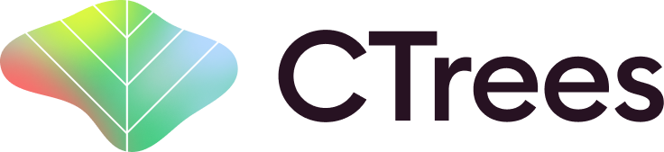

Canopy Tree Height maps for the Amazon Forest (mean height composite 2020-2024) by CTrees.org
Download URL for Selected Tile:
Description
Mean canopy Tree Height for the Amazon Forest on the period 2020-2024 at 4.78 m of spatial resolution. Created using a deep learning model on high-resolution Planet imagery from the Norway's International Climate and Forest Initiative (NICFI) Satellite Data Program.
Note: The height values in the raster are scaled by a factor of 2.5. You need to divide the values by 2.5 to get the height in meters.
License
https://creativecommons.org/licenses/by/4.0/
Contact
info@ctrees.org
How to Cite
1) Fabien H Wagner, Ricardo Dalagnol, Griffin Carter, Mayumi CM Hirye, Shivraj Gill, Le Bienfaiteur Sagang Takougoum, Samuel Favrichon, Michael Keller, Jean PHB Ometto, Lorena Alves, Cynthia Creze, Stephanie P George-Chacon, Shuang Li, Zhihua Liu, Adugna Mullissa, Yan Yang, Erone G Santos, Sarah R Worden, Martin Brandt, Philippe Ciais, Stephen C Hagen, Sassan Saatchi. (2005). High Resolution Tree Height Mapping of the Amazon Forest using Planet NICFI Images and LiDAR-Informed U-Net Model. arXiv. eprint 2501.10600. URL
https://arxiv.org/abs/2501.10600
2) CTrees. (2025). Canopy Tree Height maps for the Amazon Forest (mean height composite 2020-2024) by CTrees.org was accessed on DATE from https://registry.opendata.aws/ctrees-amazon-canopy-height. Accessed DAY MONTH YEAR.
Data hosted at:
https://registry.opendata.aws/ctrees-amazon-canopy-height/